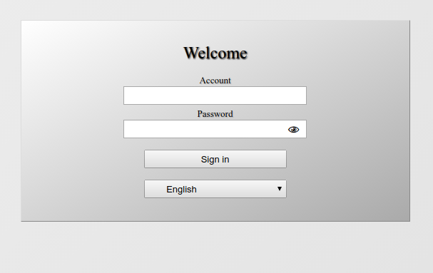

Session or form-based authentication
{kind=link}
Session vs. Basic authentication
Pros:- "real" logout button
- "nice" login screen
- user-based setuid/setgid wrapping is not possible (or not easy to implement)
- two different URLs for WebDAV access and web interface with all consequences for setup effort, user support, security
- sessions can be attacked (CRSF, man-in-the-middle, ...)
- a matching authentication handler written in Perl
- additional session files on the server
Features
- form login customization
- domain based authentication support: let the user select a domain in login screen
- authentication handler for LDAP (simple bind authentication), Kerberos for SMB backend, Kerberos/AFS for AFS backend
Requirements
- follow the installation documentation
- some new Perl modules:
- CGI::Session (Debian/Ubuntu: apt install libcgi-session-perl)
- WWW::CSRF (Debian/Ubuntu: apt install libwww-csrf-perl)
- two configurations for Apache und WebDAV CGI:
- web interface needs a session setup
- WebDAV uses another Perl script
Setup
WebDAV CGI
The WebDAV and the web interface setup differ in two aspects:-
$VIRTUAL_BASE- you need two URLs, so the VIRTUAL_BASE differs -
%SESSION- only the web interface setup and the session.pl wrapper for WebDAV access must have this
WebDAV setup:
/etc/webdav.conf:
... # set this only if you don't use domain based defaults (see defaults in %SESSION domain setup): $DOCUMENT_ROOT='/myuserpath/'; $BACKED = 'FS'; $VIRTUAL_BASE='/webdav/?'; # additional: disable web interface to prevent misuse: $FANCYINDEXING = 0; # and redirect the user to the right session login: $REDIRECT_TO = '/'; # to be sure we have no session setup for the WebDAV access: undef %SESSION; ...
Web interface setup:
/etc/webdav-session.conf:
## reuse webdav.conf because $INSTALL_BASE, $DOCUMENT_ROOT, $BACKEND, $DBI_... are the same:
## but if you use ModPerl, it doesn't work
require '/etc/webdav.conf';
$FANCYINDEXING = 1;
$VIRTUAL_BASE = '/';
%SESSION = (
## keep it secret like a database password, because it will be used to protect the CSRF token:
secret => 'YOUR SECRET PASSWORD COMES HERE',
## if the session timeout is too short the users cry, is it to long, admin cries (security!):
## see manual of CGI::Session for more information
expire => '10m',
## in seconds - normally, tokens a refreshed with a folder change but a tokenmaxage is not a session timeout, so it can live longer
tokenmaxage => 36000,
## the tokenname should not be changed unless you know you are doing (avoid clashes with form/post parameters):
tokenname => 'TOKEN',
## here comes the path to the session files
## (hint: setup a daily cronjob to remove old session files, e.g. find /tmp -name cgisess\* -mtime +1 -delete )
temp => '/tmp',
## okay, the domain based authentication:
domain => {
## this domain name should be readable for a user if you have more than one:
'mydomain' => {
## this is an example, because the TestAuthHandler knows only one user: testuser1 (password: testuser1)
## (see Authentication handler section for more)
authhandler => qw( SessionAuthenticationHandler::TestAuthHandler ),
## handler setup stuff (TestAuthHandler doesn't need it):
#config => { },
## this defaults overwrite some webdav.conf defaults:
#defaults => {
# DOCUMENT_ROOT => '/somewhereelse/',
# BACKEND => 'GFS',
#},
## a callback module that is called per request
# callback => qw( Helper::AdsSmbConfiguratorSessionAdapter ),
# callback_param => { debug=>1, nameserver=>['8.8.8.8'], memcached=>'127.0.0.1:11211', allowflag=>'webfiles' },
# this optional _order flag influences the domain selection sort order in the login form:
_order => 1,
},
## if you have more domains and more than one auth handler for a domain you can do this:
'myseconddomain' => [
{
authhandler => qw ( SessionAuthenticationHandler::LdapBindAuthHandler ),
config => {
server => 'myldapserver.mydomain.test',
basedn => 'dc=mydomain,dc=test',
},
},
{
authhandler=> qw ( SessionAuthenticationHandler::LdapBindAuthHandler ),
config => {
server => 'mysecondldapserver.mydomain.test',
basedn => 'dc=mydomain,dc=test',
},
},
],
},
);
# ... and here maybe follows extension setup
Okay, now we need a logout button for the web interface, maybe like this one: /etc/webdavcgi/templates/simple/help.custom.tmpl:
<li class="logout-button" data-href="?logout=1"><div class="label">Logout</div></li>And if you want to customize the login screen, you should copy the login.tmpl to login.custom.tmpl and edit the custom template:
cp /etc/webdavcgi/templates/simple/login.tmpl /etc/webdavcgi/templates/simple/login.custom.tmpl
Apache
The Apache configuration depends on your needs:- with mod_perl or with a simple CGI call ...
- multiple domains need multiple WebDAV URLs,
or all domains are checked for a username and password (omit DOMAIN environment in rewrite rules for that)
## yes: session.pl handles WebDAV with Basic authentication:
ScriptAlias /_dav /etc/webdavcgi/cgi-bin/session.pl
ScriptAlias /_web /etc/webdavcgi/cgi-bin/webdav.pl
<Location /_>
Require all granted
# ... mod_perl ...
</Location>
## WebDAV acccess: it gets its own WEBDAVCONF but the the wrapper needs the web interface setup in SESSIONCONF;
## change E parameter like DOMAIN and REALM as you need;
## when all domains should be checked, omit the DOMAIN env
# the session.pl needs the session configuration, the webdav.conf,
# and the HTTP header 'Authorization' to handle Basic auth:
RewriteRule /webdav /_dav \
[PT,L,E=E=WEBDAVCONF:/etc/webdav.conf,SESSIONCONF:/etc/webdav-session.conf,E=DOMAIN:mydomain,E=REALM:WebDAV,E=AUTHHEADER:%{HTTP:Authorization},E=PERLLIB:/etc/webdavcgi/lib/perl]
## you see: WEBDAVCONF differs because this is for the web interface:
RewriteRule / /_web [PT,L,E=WEBDAVCONF:/etc/webdav-session.conf,E=PERLLIB:/etc/webdavcgi/lib/perl]
Authentication handler
LDAP
The necessary distinguished name (dn) for LDAP bind authentication can be searched or given by a parameter (userdn).
# this is the default:
authhandler => qw( SessionAuthenticationHandler::LdapBindAuthHandler ),
config => {
server => 'localhost',
basedn => 'dc=localhost',
starttls => 1,
sslversion => 'tlsv1_2',
verify => 'required',
## faster than search:
userdn => undef, # usage: 'uid=%s,dc=localhost'
## for search:
filter => '(uid=%s)',
timelimit => 5,
sizelimit => 5,
scope => 'sub',
binddn => undef,
password => undef,
},
Kerberos
authhandler => qw( SessionAuthenticationHandler::KerberosAuthHandler ),
config => {
krb5_config => undef, # overwrites KRB5CCNAME environment (system default: /etc/krb5.conf)
ticketfilename => '/tmp/krb5cc_webdavcgi_%s',
ticketlifetime => 300,
kinit => q{kinit '%s' 1>/dev/null 2>&1}, # %s is replaced by username
kdestroy => q{kdestroy 1>/dev/null 2>&1},
},
Kerberos/AFS
authhandler => qw( SessionAuthenticationHandler::KerberosAuthHandler ),
config => {
## all options from Kerberos authentication and additionally:
aklog => 'aklog', # path to aklog binary
},
Security
- WebDAV CGI uses POST and sometimes GET requests but all POST requests (includes login process) are protected by secure token (using WWW::CSRF and the Encrypted Token Pattern).
- The secure token changes every time a user change the folder and a token expires in a given time (default: 10 hours).
- The token is protected by a secret password that must be set by the administrator in the session setup.
- The session file on the server stores only the username. No password is stored by WebDAV CGI.
- The session expires in a given time (default: really short 10 minutes) and prevent a abuse of a user session.
© ZE CMS, Humboldt-Universität zu Berlin | Written 2010-2017 by Daniel Rohde